Tools Cheat Sheet
Description
Nmap (Network Mapper) is an open-source network scanning tool used to discover hosts and services on a computer network. It is primarily used by system administrators and cybersecurity professionals for security audits and vulnerability assessments.
Basic use :
nmap -sC -sV -Pn -T5 -top-ports 1000 localhost-sC Scan with default NSE scripts. -sV Try to guess version's services. -Pn Skip host discovery -T5 Speed mode (T0-T5) T5 is the fastest -top-ports 1000 Scans the 1000 most popular ports
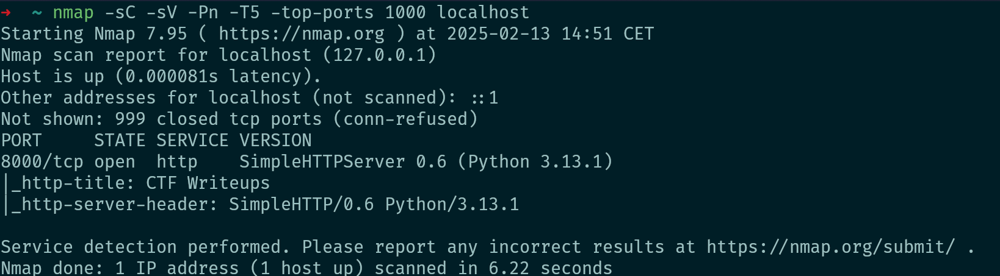
If you are on a sensitive environment you can use only non intrusive script with :
nmap -script "not intrusive" localhost You can also specify a script :
nmap -script=http-enum,http-feed localhost Find all nmap scripts there
Spoof your IP with -D
nmap -D 192.168.1.101,192.168.1.102 localhostOS detection -O
nmap -O localhost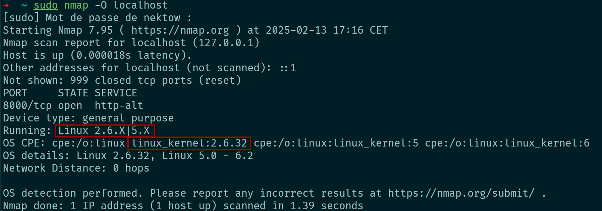
NB : You can use -A to enables OS detection, version detection, script scanning, and traceroute
nmap -A localhost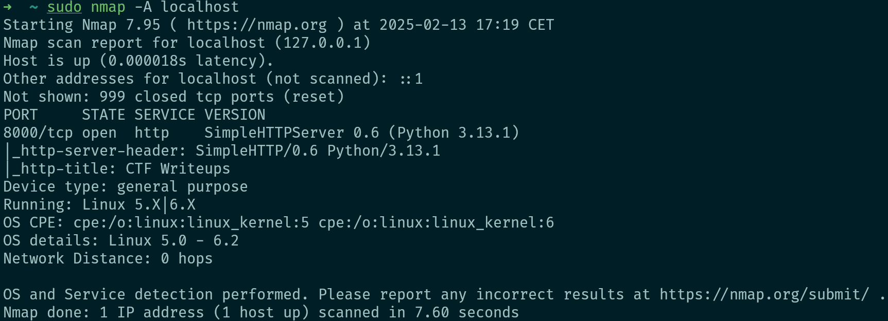
Description
John the Ripper est un outil de cassage de mots de passe rapide et efficace. Il supporte de nombreux algorithmes de hachage et peut être utilisé pour tester la robustesse des mots de passe.
Exemples d'utilisation
john --wordlist=passwords.txt hash.txtjohn --format=raw-md5 hash.txtCaptures d'écran
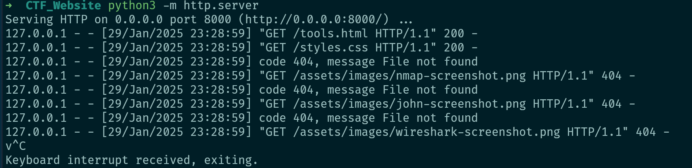
Description
Hydra is a parallelized login cracker which supports numerous protocols to attack. It is very fast and flexible, and new modules are easy to add.
How use it ?
Basic example :
SMB Brute Forcing
hydra -L "usernames.txt" -P "passwords.txt" smb://IP -V -f -V verbose (show login/pass for each attempt -f exit when a login/pass pair is found
LDAP Brute Forcing
hydra -L users.txt -P passwords.txt ldap2://IP -V -fFTP Password Brute Forcing
hydra -l "username" -P /usr/share/worldlist/rockyou.txt ftp://IPSSH Password Brute Forcing
hydra -l "username" -P /usr/share/worldlist/rockyou.txt ssh://IPYou can also specify a port with -s "port" :
hydra -l "username" -P /usr/share/worldlist/rockyou.txt ssh://IP -s 12345HTTP POST Login AND Password Bruteforce :
hydra -L username.txt -P passlist.txt http-post-form "http://IP/login.php:username=^USER^&password=^PASS^:F=error"http-post-form is for specify an http method login.php is your entry point 'username' is the name of the username field in the connection form 'password' is the name of the password field in the connection form 'error' is a word contained in the page when the connection fails.
Description
ffuf is a fast web fuzzer written in Go that allows typical directory discovery, virtual host discovery (without DNS records) and GET and POST parameter fuzzing.
How use it ?
Basic example :
ffuf -u "url/FUZZ" -w "worldlist"
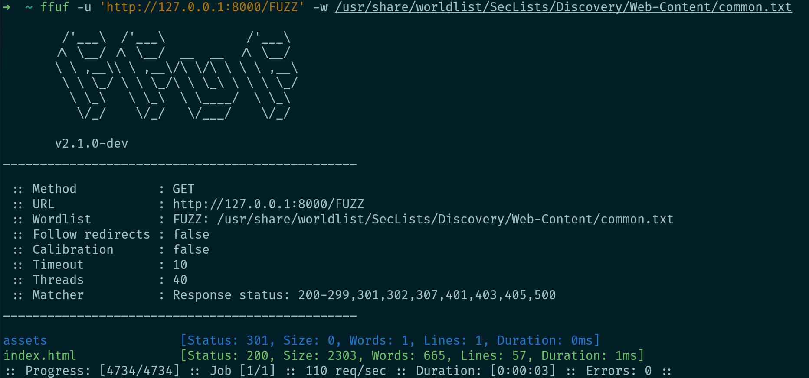
NB: You can use the Seclist repo
Let's use more specific parameters : -H "Specify a header" -X "Specify a request method" -fl 1 "Exclude every response which contains 1 line" -fr error "Exculde every response which contains 'error' " -fc 400-500 "Exculde every response with a status codes between 400-500" -mc 200 "Match every response with the statut code '200'
ffuf -u 'http://localhost:8000/FUZZ' -w /usr/share/worldlist/SecLists/Discovery/Web-Content/common.txt -H "User-Agent: Mozilla/5.0" -X GET -fl 1 -fr "error" -fc 400-500 -mc 200 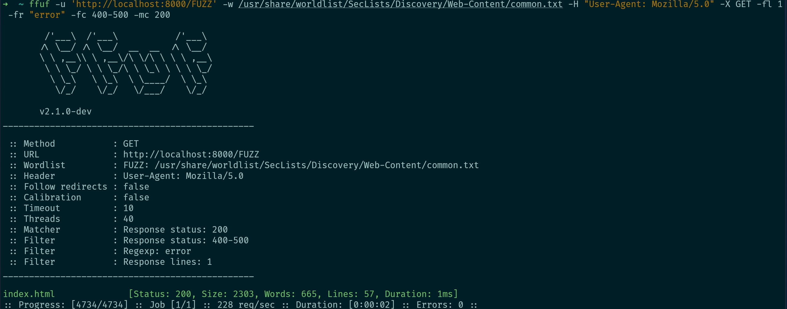
Now with POST method :
ffuf -u 'http://localhost:8000/FUZZ' -w /usr/share/worldlist/SecLists/Discovery/Web-Content/common.txt -H "User-Agent: Mozilla/5.0" -X POST -d '{"user":"JohnDoe", "password":"azerty"}' -fl 1 -fr "error" -fc 400-500 -mc 200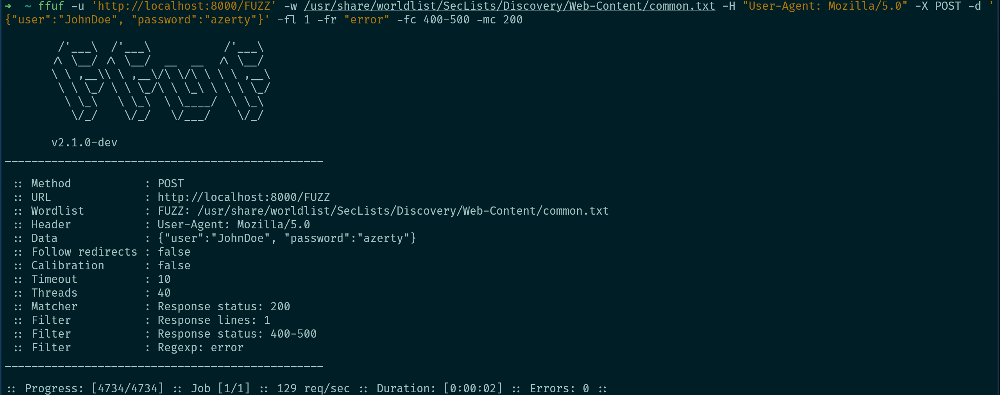
You can even specify a cookie with -b :
ffuf -u 'http://localhost:8000/FUZZ' -w /usr/share/worldlist/SecLists/Discovery/Web-Content/common.txt -b "PHPSESSION=aWxvdmVzYWxhZAo="You also have the same feature than burpsuite with sqlmap, you can use a request directly (Really Useful) :
ffuf -request request.rq -u 'http://localhost:8000/FUZZ' -w /usr/share/worldlist/SecLists/Discovery/Web-Content/common.txt 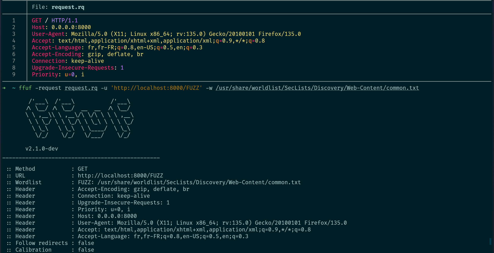
You can obviously use ffuf to try some LFI
ffuf -request request.rq -u 'http://localhost:8000/index.php?page=FUZZ' -w /usr/share/worldlist/SecLists/Fuzzing/LFI/LFI-linux-and-windows_by-1N3@CrowdShield.txtDescription
The Volatility Framework is a completely open collection of tools, implemented in Python under the GNU General Public License, for the extraction of digital artifacts from volatile memory (RAM) samples. The extraction techniques are performed completely independent of the system being investigated but offer visibilty into the runtime state of the system. The framework is intended to introduce people to the techniques and complexities associated with extracting digital artifacts from volatile memory samples and provide a platform for further work into this exciting area of research.
How use it ?
python2 vol.py -f "file" imageinfoGet the best profiles
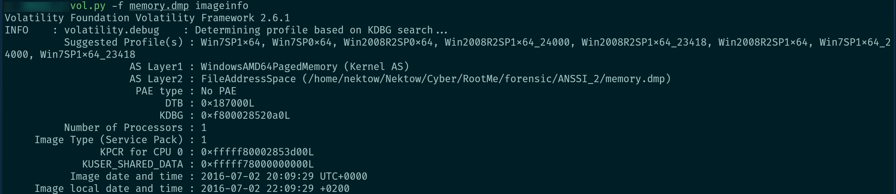
Select the better one, there we chose Win7SP1x64 and launch "pstree"
python2 vol.py -f --profile="Profile" pstree Pstree is used to have a clean arborescence of every processus launch in the image.
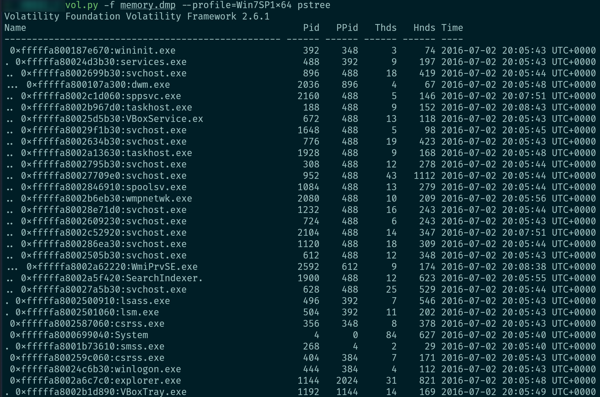
python2 vol.py -f "file" --profile="Profile" cmdlineShow command line arguments.
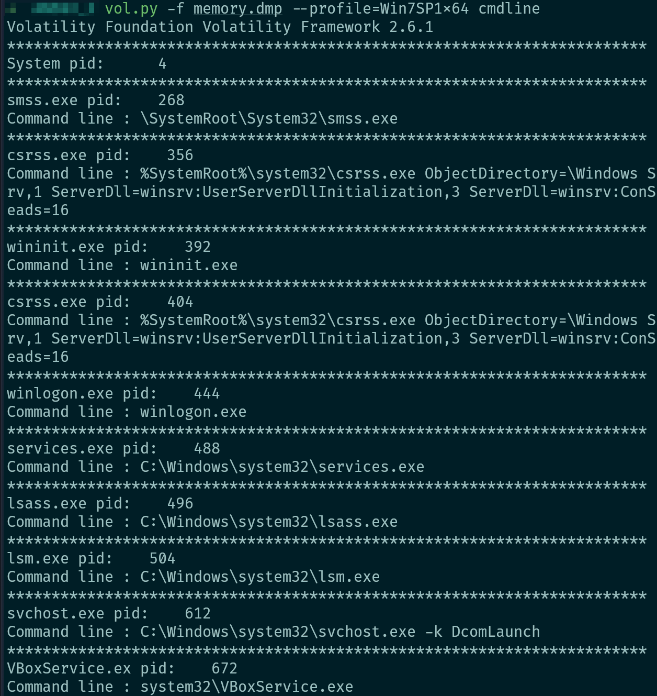
python2 vol.py -f "file" --profile="Profile" filescanList every files loaded in memory
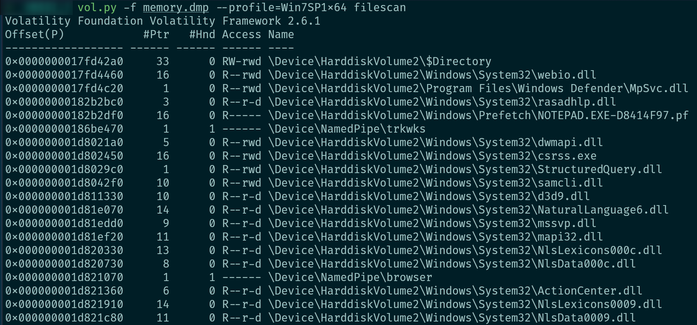
python2 vol.py -f "file" --profile="Profile" clipboardDump every loaded clipboard.
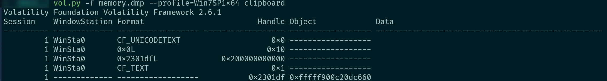
python2 vol.py -f "file" --profile="Profile" netscanEnumerate network communication
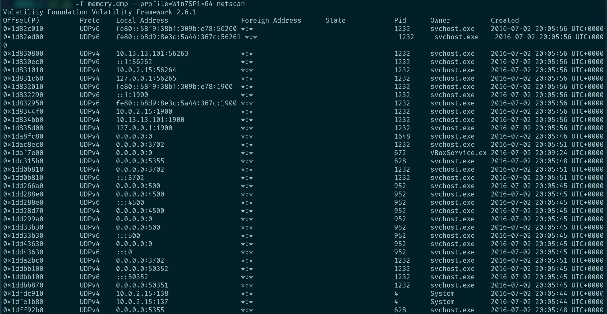
Some others usefull commands :
python2 vol.py -f "file" --profile="Profile" iehistory python2 vol.py -f "file" --profile="Profile" truecryptpassphrase python2 vol.py -f "file" --profile="Profile" ruecryptmaster python2 vol.py -f ch2.dmp --profile="Profile" memdump -p "PID" --dump-dir "Output Path" python2 vol.py -f ch2.dmp --profile="Profile" procdump -p "PID" --dump-dir "Output Path" python2 vol.py -f ch2.dmp --profile="Profile" lsadumppython2 vol.py -f ch2.dmp --profile="Profile" hashdump python2 vol.py -f ch2.dmp --profile="Profile" malfindIf you need the official Cheat Sheet : Cheat Sheet V2.4
Description
Wireshark est un analyseur de paquets open source utilisé pour le dépannage réseau, l'analyse de protocoles, et l'éducation.
Exemples d'utilisation
wireshark -k -i eth0Captures d'écran